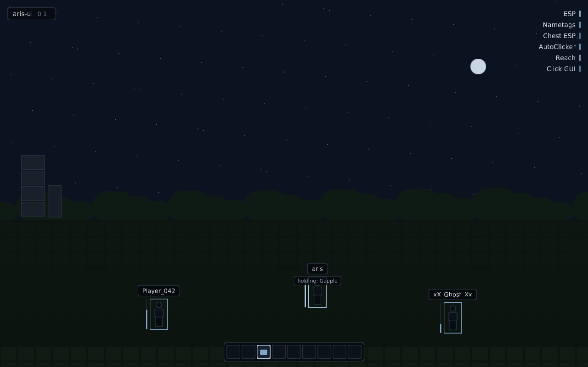

A more beautiful ImGui replacement.
Optimised for agents.
An immediate-mode UI toolkit for OpenGL overlay injection. Widgets are drawn as analytic signed-distance fields, text comes from offline MSDF atlases, layout is Yoga flexbox — and the whole thing renders headlessly to PNG so a coding agent can build, test and look at its own work.

What you get
The rendering quality of a hand-written overlay UI, with none of the shader debugging.
SDF shapesrenderer
Rounded rects, borders and soft shadows are analytic signed-distance fields — resolution-independent, antialiased, one draw call for every shape on screen.
MSDF textfonts
Offline multi-channel signed-distance atlases (msdfgen) with em-normalized metrics. One PNG + JSON per font; crisp from 11 px to any DPI.
Flexbox layoutyoga
Panels, rows and columns backed by a vendored Yoga tree with an RAII wrapper. Retained between frames, culled when unused.
Host-safeinjection
Caller-driven frame loop, no globals, no threads. An RAII guard snapshots and restores the host's entire GL state around the UI pass.
Eased by defaultfeel
Hover, press and value transitions run on frame-rate-independent exponential smoothing. Motion you don't have to write.
Built for agentstooling
make verify compiles, runs the test suite and renders every named scene headlessly to PNG — an agent can confirm its own visual work.
Drop into any OpenGL loop
No windowing, no threading, no swap — you keep the loop, aris-ui draws inside it.
git clone <repo> aris-ui && cd aris-ui
make configure && make verify
# → tests pass, previews/*.png renderedui::GlStateGuard guard;
ctx.BeginFrame(dt, w, h);
ctx.BeginPanel("main", rect, style);
if (ui::Button(ctx, "Click me")) ++clicks;
ctx.EndPanel();
ctx.Render(); // host state restored by guardScenes your agent can look at
Every scene renders headlessly to a PNG — overlay HUDs, a mock ClickGUI, hover and press states, text ramps.


Roadmap
Next stages (see PROGRESS.md).
Background blur
Dual-Kawase backdrop blur via FBOs, glows, gradient fills, nine-patch images.
GL 2.1 / 150-core
Shader variants with runtime probing for older Minecraft render pipelines.
Minecraft layer
GUI-scale sync, WndProc/swapbuffer hook adapters, injected-DLL example.
Widgets v2
Dropdowns, text input, scroll views, tooltips, window manager.